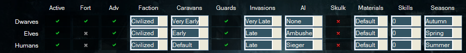
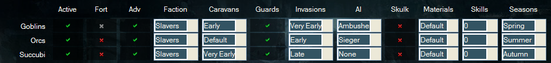
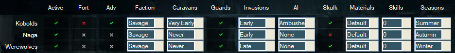

Entities
There are more than enough civs in the mod to make the game challenging for anyone. Vanilla DF has one civ, the goblins, that attacks you. MDF has 16. Plus another 18 optional ones from the Fortress Defense mod. The civs in the mod are split into factions, with 20 base civs in 5 factions. Civilized Races vs. Savage Races vs. Evil Races vs. Slaver Races vs. Cavern Races. Some of these allies trade among themselves, other make their alliances known by simply not attacking you.
The easiest way to get a good overview is to open the GUI and have a look at the race tab. It shows you all active civs with one look, including details about attack timing, alliances and ai. Since these are things you can change and can be different in each world, this page will instead give you information anbout their equipment, materials, mounts and special abilities. It might help you to prepare for attacks better!

Faction: Civilized
- Dwarves - Good mix of weapons/armor - High tier metals - Very good mounts - Might bring mages.
- Elves - Knives/Archers with root armor - Silver & Mithril - Random mounts and warbeasts.
- Humans - Good mix of weapons/armor - Medium tier metals - Armored horses as mounts - Might bring muskets/cannons.

Faction: Slavers
- Goblins - Medium tier weapons/armor - Medium tier metals - Barghests as mounts - Mostly send ambushes.
- Orcs - Large and strong, therefore good in melee - High tier weapons - Medium tier armor - Medium tier metals - Might bring mages.
- Succubi - Medium tier weapons - Low tier armors - Strong warbeasts - Might bring mages.

Faction: Savage
- Kobolds - Only send single, invisible units - Tiny, therefore weak in melee - Medium tier armors/weapons.
- Naga - No weapons/armor - Amphibious - Poisonous bite - Might bring mages.
- Werewolves - Only send single, invisible units - Very strong in melee - No armors/weapons - Weak against Silver.

Faction: Evil
- Titans - High tier invader - Very large - Good weapons and armor.
- Vampires - High tier invaders - Fast and deadly - Ambushers - Can spread vampirism.
- Necromancers - Medium tier invaders - Raise the dead - Weak in melee.
- Nightcreatures - Only send single snatchers/thieves like Kobolds - If successful, start with sieging you.

Fortress Defense Races
The Fortress Defense Mod and the info below have been written by darkflagrance. These races are disabled by default, but can be added to any world.
Tier 1: These enemies start besieging you when you have 20 dwarves, depending on how long it takes to reach your fort from where they are. Luckily, the most they should be able to do is disrupt trade, if you have any form of armor available.
Dark Stranglers (size 40,000)
About 2/3 the size of dwarves and lacking in any form of armor, they are not much of a threat to an early militia. They do, however, have 4 arms and a very vicious bite, and are quite fast. As the weakest of the new enemies, they also attack the soonest.
Beak Wolves (size 50,000+)
These relatives of the familiar mount of Goblins, the Beak Dog, similarly attack dwarves with their crushing beak and sharp claws. However, they fight with greater cunning and skill than their wilder, less organized cousins, fleeing if the odds seem stacked against them. These black and white monsters will usually, but not always, attack a little while after the Stranglers.
Tier 2: These enemies come when you have about 50 dwarves. You'll only need a few good men to withstand these sieges.
Frogmen (size: 50,000)
Frogmen are just a little smaller than dwarves. They treat water as no obstacle, and in addition, they only know how to use copper and cannot make many kinds of armor. They will probably flee when it is clear they are no match for you, but watch out for their arrows!
White Tigermen (size: 90,000)
Learning of the servitude their striped brethren have been forced into by the elves and dwarves, these northern avengers have come to wreak vengeance and liberate the enslaved! Though they are bigger than dwarves, their lack of strong armor and inability to smelt anything except copper means that dwarves should nonetheless easily defeat them.
Tier 3: These enemies come when you have about 80 dwarves. The real battles begin here. In addition to the civs below, vanilla goblins will also begin attacking you.
Nagas/Helmetsnake Men (size: 50,000)
Half-serpent and half-man, with poisonous fangs. Their venom varies from merely paralyzing to capable of inflicting necrosis. The striking reflexes of their reptilian halves give them a great deal of speed when fighting.They use bronze and iron weapons, and include archers among their ranks. Nagas have developed some armor making ability; however, they cannot armor their snake-like lower bodies as well as dwarves. Also, they are dextrous enough to avoid traps.
Putrid Blendecs (size: 60,000)
Finally, an enemy the same size as a dwarf! Foul blendecs, which have cloven feet and eyeless skulls for heads, could only be found in evil areas in vanilla. In Fortress Defense, they attack armed with bronze and iron weapons and armor. Because they are a twisted mix of the undead and the living, they know neither pain nor fear, and your traps cannot target them. Lately, some Putrid Blendecs have been discovered to contain lumps of Cassiterite inside their bodies.
Ferric Elves (size: 60,000)
Ferric Elves are the remnants of elven communities who survived the fiery destruction of their forests. Left with no other choice, they learned to smelt iron and silver with the leftover charcoal and forged themselves into a formidable fighting force. Each member of their desperate race is trained to use a ranged weapon from birth, resulting in innate archery skill. Swift and agile, they are too graceful to be caught by traps. Cut off from their connection to nature they no longer wish to live, and experience no fear charging into battle, hoping only to end their internal pain. Please be so good as to oblige them!
Hellfire Imps (size: 60,000)
Fire Imps are normally exceedingly small. Hellfire Imps, however, are their comparatively huge relatives who have grown so fond of setting bonfires that they have formed a marauding horde for the purpose of burning to death as many dwarves and other unlucky victims as possible. They use up to steel armor and weaponry (including fearsome whips), but their most fearsome ability is to throw or breath fire at their prey from range, a capability which is possessed by all of their troops. Shields are heavily advisable against them.
Note: you can cheese your way out of some of this by turning off temperature. (weaklings…)
Tier 4: The previous tier contained enemies that were about equal to dwarves. Now, the enemies outmatch them significantly.
Warwolves (size: 120,000)
Twice the size of dwarves, the lightning-fast, iron- and steel-wielding werewolves are guaranteed to defeat any similarly armed unskilled dwarf in single-combat. In addition, they avoid traps, meaning that there is no easy way to deal with them. If you wish to meet them head-on, no less than steel-armed dwarves will suffice.
War Elephants (size: 5,000,000)
No, that size is not a typo. Elephants are massive, and they have come to lay waste to your fort just as they did the fortresses of old, only this time they come in heavy steel armor, wielding massive mauls or morningstars. Luckily for the player, Elephants do not wield shields with their trunks, and mainly rely on their tusks, their powerful bulk, and pure animal rage to kill your dwarves.
Challenge Version enemies: If it can be imagined, the power and ferocity of the following four races exceeds those of the previous tier by a ridiculous amount. They will pull no punches in their attempt to end your fort. That is why they have been sequestered into a whole league of their own.
Nightwings (size: 120,000)
These jackal-headed fiends combine the much of the worst of the basic mode foes. They wield cruel weapons of steel, experience neither pain nor fear, disable your traps, are free of any need for breath or nourishment, and worst of all, they can fly on their leathery wings. They represent the most elite conventional fighting force you will face. Good luck to those who face them in battle!
Minotaurossi (size: 220,000)
Minotaurs are the weakest of the semi-megabeasts in vanilla, imagined as solo attackers of fortresses! Their Fortrees Defense Mod cousins have banded together to steal the secret of steel from the dwarves. In battle, they know no restraint: their preferred weapons are whips, scourges, hammers, and halberds.
Jotunar (size: varies, maximum 9,000,000)
If you reach this point (which may be sooner than you think), it means that a race of giants once exiled to the barren wastelands of the world has come to initiate Ragnarok upon your fortress! They come in various shapes and sizes, and some even wield fire. Due to their sheer size (more than 100 times the size of a dwarf!), It will take legendary warriors, strong defenses, and masterful weaponry (blunt weapons can easily penetrate their armor!) to match these foes. But fear not! The enemies generated by Dwarf Fortress can possess neither great weapon skill nor arms. Weathering their storm is not impossible.
Great Fiend Spiders (size: 100,000)
What happens when you take the bane of the depths of the underground chasms - the Giant Cave Spider - and allow it to breed in such numbers that it spreads across the land? The answer is the eight-legged plague known as the Great Fiend Spider. Though its size is not especially intimidating, its ability to fire silk and its deadly paralytic venom can cripple your dwarves, preventing them from moving or fighting back as they are torn to shreds by the dribbling mandibles of the spiders. Of all the foes in this mod, I fear these the most.
Bonus Enemies: The bonus tier enemies attack at the same time as Tier 4 enemies. They are very similar to dwarves in size and wield steel equipment. One could compare them to a well-trained dwarven militia.
Greater Badgermen (size: 50,000+)
The Greater Badgermen are an ancient and proud race who, like dwarves, build great subterranean communities in the mountains. In battle, they work themselves into berserk rages while charging wildly without regard for their own safety. Throughout their lives, they gradually increase in size; a Greater Badgerman of venerable age will be 1.5x as big as a dwarf.
Pandashi (size: 50,000+)
The Pandashi are a reclusive race, but fond of contests to the death with powerful foes. If you survive long enough, the Pandashi will leave their bamboo forests to challenge you in battle. Their power comes not only from the foreign equipment they wield, but also their innate martial skill and their ability to enter martial trances. Their high awareness and agility allows them to dodge traps. Like Greater Badgermen, they gradually increase in size throughout their lives.
Raptor Men (size: 50,000+)
Raptor Men are essentially lock-picking upgrades of Frogmen. Feathered and scaled, they are capable of using steel weapons but have limited armor options. They can easily cross water to attack your dwarves, and simple locked doors cannot stymie their cunning minds.
Furies (size: 60,000)
Furies, like their cousins Harpies, possess the ability to fly. This resulted in their being removed from the Basic version due to flight pathfinding being broken. Unlike Harpies, however, Furies come in both male and female forms, and can wield weapons. Because they fly, however, Furies are not as well armored as other races. They use bronze only, and they are same size as dwarves.